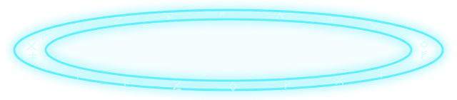

<!doctype html><meta charset=utf-8><title>Rot card sprites</title>
<style>body{margin:0;background:#1f1c55;display:flex;flex-wrap:wrap;gap:16px;padding:16px;font:12px monospace;color:#ccd}figure{margin:0;background:#2a2870;padding:8px;border-radius:8px}img{display:block;image-rendering:auto}</style>
<figure><figcaption>crystals</figcaption></figure>
<figure><figcaption>rot</figcaption></figure>
<figure><figcaption>thaw</figcaption></figure>
<figure><figcaption>lantern</figcaption></figure>
<figure><figcaption>wisp</figcaption></figure>
<figure><figcaption>roots</figcaption></figure>
<figure><figcaption>cornice</figcaption></figure>
<figure><figcaption>ground</figcaption></figure>
<figure><figcaption>bolt</figcaption></figure>
<figure><figcaption>ring</figcaption></figure>
<figure><figcaption>btncap</figcaption></figure>
<figure><figcaption>bg</figcaption></figure>
